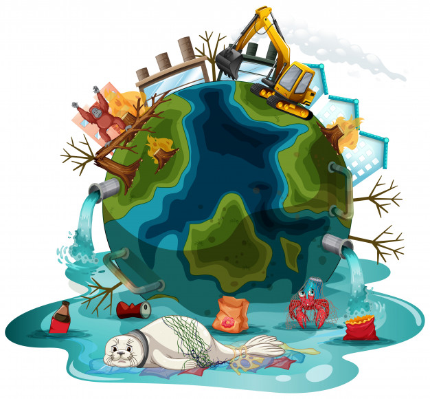
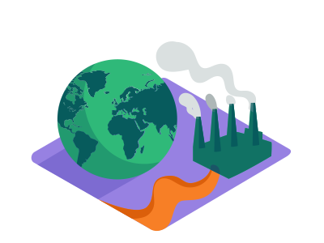

• Climate Action ແມ່ນຫຍັງ?
ຫຼາຍຄົນຄົງຈະເຄີຍໄດ້ຍິນການກ່າວເຖິງ ການປ່ຽນແປງຂອງສະພາບອາກາດ ຫຼາຍຂຶ້ນໃນປັດຈຸບັນ ເນື່ອງຈາກສະພາບອາກາດທີ່ມີການປ່ຽນແປງໄປຢ່າງໄວວາ ເຊິ່ງນັກວິທະຍາສາດເຊື່ອວ່າເປັນເຫດມາຈາກການເຜົາໄໝ້ເຊື້ອເພີງຟອສຊິລ (fossil fuel) ທີ່ເປັນແຫຼ່ງພະລັງງານ ທີ່ສຳຄັນໃນການພັດທະນາອຸດສາຫະກຳໃນຊ່ວງ 200ປີ ທີ່ຜ່ານມາ ເປັນສາເຫດເຮັດໃຫ້ປະລິມານກາສພາວະເຮືອນແກ້ວໃນບັນຍາກາດເພິ່ມຂຶ້ນ ເຮັດໃຫ້ເກີດປາກົດການເຮືອນແກ້ວ ຫຼື ພາວະໂລກຮ້ອນ.
• ການປ່ຽນແປງຂອງສະພາບອາກາດ.
ການປ່ຽນແປງຂອງສະພາບອາກາດ ແມ່ນເປັນປາກົດການທີ່ເກີດຂຶ້ນຢ່າງຊ້າໆ ແລະ ໃຊ້ເວລາດົນທີ່ຈະສັງເກດເຫັນ, ແຕ່ກິດຈະກໍາຂອງມະນຸດທີ່ຜ່ານມາຕັ້ງແຕ່ຍຸກປະຕິວັດອຸດສາຫະກໍາເຮັດໃຫ້ການສະສົມກາສເຮືອນແກ້ວ ແລະ ກັກເກັບຄວາມຮ້ອນໃນຊັ້ນບັນຍາກາດເພີ່ມສູງຂຶ້ນຢ່າງໄວ ກໍ່ໃຫ້ເກີດພາວະໂລກຮ້ອນ ເຊິ່ງສົ່ງຜົນໃຫ້ມີການປ່ຽນແປງທີ່ກະທັນຫັນ ແລ້ວມີການປ່ອຍກາສເຮືອນແກ້ວສູ່ຊັ້ນບັນຍາກາດ ລວມເຖິງການເພີ່ມຂຶ້ນທັງຂອງປະລິມານ ແລະ ຄວາມໜາແໜ້ນ ຈະເຮັດໃຫ້ການສະທ້ອນກັບຂອງພະລັງຄວາມຮ້ອນຂອງດວງອາທິດທີ່ສ່ອງມາຍັງພື້ນຜິວໂລກ ມີອຸນຫະພູມສູງຂຶ້ນ
• ກິດຈະກຳຂອງມະນຸດທີ່ມີຜົນຕໍ່ການປ່ຽນແປງສະພາບອາກາດ.
 ກິດຈະກຳຂອງມະນຸດທີ່ມີຜົນຕໍ່ການປ່ຽນແປງສະພາບອາກາດໄດ້ແກ່ ການຂັບຂີ່ຍານພາຫະນະ,ການໃຊ້ເຊື້ອໄຟຫຸງຕົ້ມລວມທັງການຕັດໄມ້ທຳລາຍປ່າ ແລະ ການກະສິກຳບາງປະເພດທີ່ສົ່ງຜົນຕໍ່ສະພາບອາກາດເຊັ່ນ:ການຖາງປ່າເພື່ອປູກເຂົ້າ
ແລະ ຜົນລະປູກຕ່າງໆນຳອີກ.
ອຸດສາຫະກຳໃຫຍ່ທີ່ເປັນສາເຫດຫຼັກສົ່ງຜົນຕໍ່ສະພາບອາກາດທີ່ມີການປ່ຽນແປງ ເນື່ອງຈາກການປ່ອຍກາສຄາບອນໄດອອກໄຊຈຳນວນຫຼາຍສູ່ຊັ້ນບັນຍາກາດ ເຊັ່ນໂຮງງານຜະລິດຊີມັງ, ເຄື່ອງຈັກ ແລະ
ອື່ນໆ.
ກິດຈະກຳຕ່າງໆທີ່ກ່າວມາຂ້າງເທິງນັ້ນ ແມ່ນມີຜົນເຮັດໃຫ້ເກີດກາສເຮືອນແກ້ວ(Greenhouse Gases) ໃນຊັ້ນບັນຍາກາດມີຄວາມເຂັ້ມຂົ້ນເພີ່ມຂຶ້ນ ເຊິ່ງກາສເຮືອນແກ້ວນີ້ມີໜ້າທີ່ໃນການກັກເກັບລັງສີຄວາມຮ້ອນ
ຫຼືທີ່ເອີ້ນວ່າ "ລັງສີອິນຟຣາເຮດ (Infrared)" ຈຶ່ງຊ່ວຍຮັກສາຄວາມຮ້ອນຈາກດວງອາທິດໃຫ້ມີຢູ່ໃນຊັ້ນບັນຍາກາດໂລກຢ່າງເໝາະສົມ ແຕ່ການທີ່ມີປະລິມານຂອງກາສເຫຼົ່ານີ້ຫຼາຍເກີນກວ່າລະດັບທີເໝາະສົມຕໍ່ການດຳລົງຊີວິດຂອງສິ່ງທີ່ມີຊີວິດໃນໂລກເຮັດໃຫ້ຄວາມຮ້ອນຈາກດວງອາທິດຖືກເກັບໄວ້ໃນຊັ້ນບັນຍາກາດ
ເຊິ່ງເຮົາເອີ້ນວ່າ: ປາກົດການເຮືອນແກ້ວ(Greenhouse Effect) ຈຶ່ງສົ່ງຜົົນໃຫ້ອຸນຫະພູມຂອງໂລກສູງຂຶ້ນໃນລະດັບທີ່ຜິດປົກກະຕິ ເຊິ່ງພວກເຮົາເອີ້ນວ່າ "ພາວະໂລກຮ້ອນ" ເຊິ່ງພາວະໂລກຮ້ອນນີ້ເຮັດໃຫ້ອຸນຫະພູມໂດຍສະເລ່ຍຂອງໂລກສູງຂຶ້ນ ເຮັດໃຫ້ລະດູການຕ່າງໆ ປ່ຽນແປງໄປ
ເຊິ່ງເປັນການປ່ຽນແປງສະພາບພູມອາກາດນັ້ນເອງ.
ຂໍຂອບໃຈເອກະສານອ້າງອີງ ແລະ ຮູບຈາກ:
- https://greennews.agency- https://www.greenpeace.org
- https://www.seub.or.th
- https://lifestyle.socialgiver.com
- https://www.reanrooclimatechange.com
- https://www.freepik.com
- https://undraw.co
- https://climate-science.com
- https://today.line.me/th/v2/
- https://www.greenpeace.org/thailand/